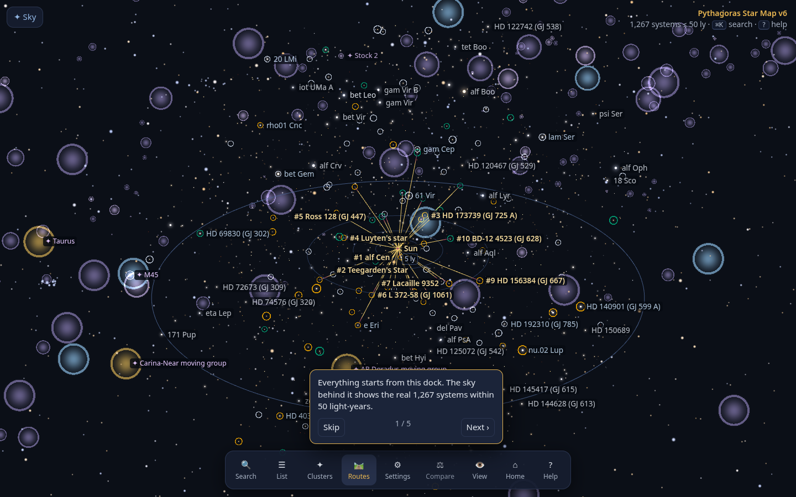
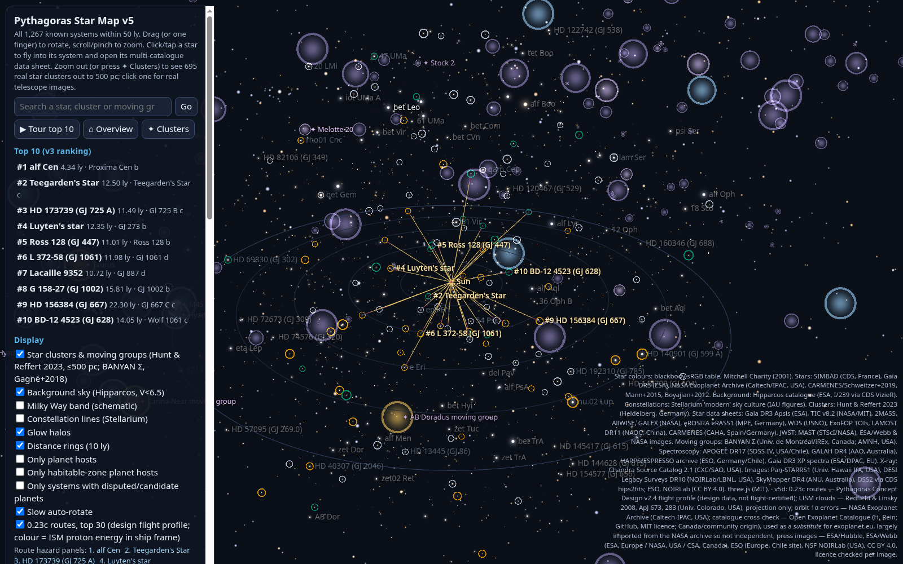

Same data as v5, with an easier interface. The sky fills the screen and a dock holds everything else. Press ⌘K or / to search stars, planets, clusters, routes and commands. A ranked side list has filter chips and j/k keys. Each system has a tabbed page: Summary, Planets, Findings (with verification badges), Hazards, Images and Data sheet. Breadcrumbs, Esc to go back, deep links, an onboarding tour and a mobile layout are included. Heavy data loads after the map appears. v6.3 loads faster (data split into cached, versioned files; offline repeat visits over http) and adds the
sky from Earth (horizon, Chicago by default, any date, 2032 preset, “visible tonight” list), a lighter label style choice, long-press cards on touch screens, and a JWST tour built from observation papers. Screenshots:
Earth sky,
halo labels. v6.2 adds guided tours (
nearest neighbours,
best destinations,
JWST results,
hazards), camera presets (
top-down,
night sky), label density and declutter, hover cards and 5/10/20/50 ly rings. Plain-language summary line on each star page, compare mode (pin up to 3 systems), print and share. Examples:
compare ·
α Cen findings ·
Pleiades ·
α Cen route hazards · screenshots:
star page,
search,
mobile.

Everything in v4, plus per-star data sheets from 8 catalogues (about 32,000 sourced values), real DSS2 sky images for every system, and 695 Gaia star clusters out to 1,630 ly. 119 of them have real images, with ESO and NOIRLab photos of the Pleiades, Hyades, NGC 3532 and NGC 2547.
Cluster panel ·
star data sheet ·
notes ·
sources.